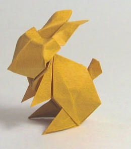
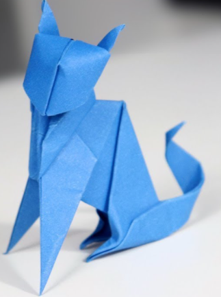
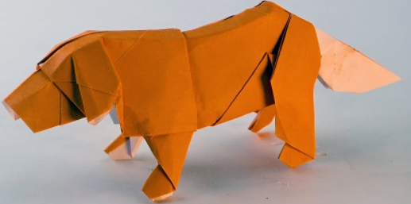
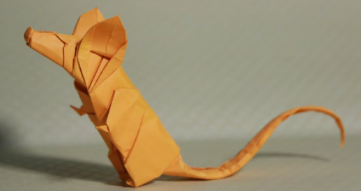

Curiosidades
Passáro

- Em todo o mundo existem mais de 8.500 espécies de aves.
Coelho

- Um coelho selvagem pode atingir 55 quilômetros por hora. Seu salto pode chegar a um metro de
altura e o mais longo pode atingir três metros
Gato

- Um gato roça num humano não apenas para mostrar afeto, mas também para marcar o seu
território,
devido ao odor que as glândulas à volta da sua face libertam. A cauda e as patas também têm o mesmo odor do
gato.
Cachorro

- O olfato dos cachorros é 1 milhão de vezes melhor do que o dos seres humanos. O olfato dos
cães
é um dos melhores da natureza. Se as membranas situadas no nariz dos cães fossem estendidas, elas seriam
maiores
que o próprio cão.
Rato

- Ratos possuem uma extraordinária habilidade para se localizar, aprender caminhos novos e
criar
atalhos em lugares conhecidos (em resumo: eles possuem uma noção espacial mais evoluída do que a nossa).